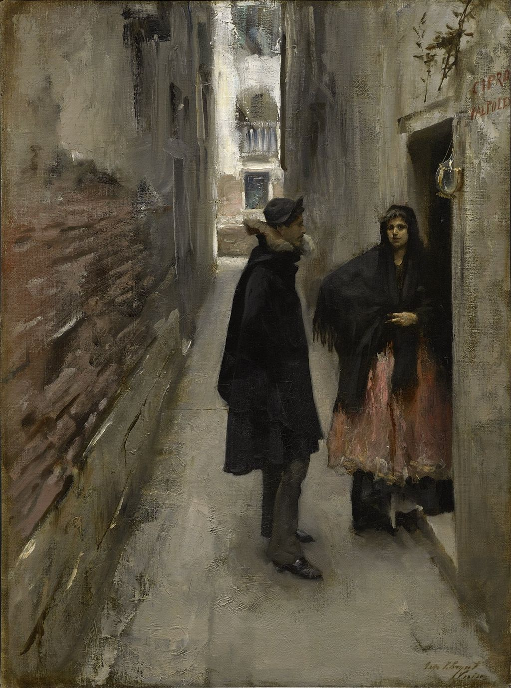

<head>
<meta charset="UTF-8" />
<meta name="keywords" content="drawing, painting" />
<meta name="description" content="drawings by Sunjy" />
<title>Sunjy</title>
<link rel="shortcut icon" type="image/x-icon" href="../../mImages/mCommon/favicon.ico" media="screen" />
<link rel="stylesheet" type="text/css" href="../../mCsses/mCommon/mCssA.css" />
<link rel="stylesheet" type="text/css" href="../../mCsses/mCommon/mCssB.css" />
<link rel="stylesheet" type="text/css" href="../../mCsses/mCommon/mCssC.css" />
<link rel="stylesheet" type="text/css" href="../../mCsses/mCommon/mCssD.css" />
<link rel="stylesheet" type="text/css" href="../../mCsses/mContent/mCssA.css" />
<link rel="stylesheet" type="text/css" href="../../mCsses/mContent/mCssB.css" />
<link rel="stylesheet" type="text/css" href="../../mCsses/mContent/mCssC.css" />
<link rel="stylesheet" type="text/css" href="../../mCsses/mContent/mCssD.css" />
</head>
<script type="text/javascript" src="../../mScripts/mContent/mContentAA.js" /></script>
<script type="text/javascript" src="../../mScripts/mContent/mContentAB.js" /></script>
<script type="text/javascript" src="../../mScripts/mContent/mContentAC.js" /></script>
<script type="text/javascript" src="../../mScripts/mContent/mContentAD.js" /></script>
<script type="text/javascript"></script> 
<script type="text/javascript">
document.write('<div class="mImgAbsolute"></div>');
/*
document.write('<p class="mFontSizeBColor" />From a white paper...</p>');
document.write('<table class="center"><tr><td>');
document.write('');
document.write('</td></tr></table>');
*/
</script>


<script type="text/javascript">
document.write('<p class="mFontSizeBColor" />A Street in Venice</p>');
document.write('<p class="mFontSizeSColor" />“A Street in Venice” by John Singer Sargent is another of Sargent’s Venetian scenes depicting a backstreet in the shadows while light flashes on the buildings in the background. The painting is composed as a series of descending rectangles arranged in a near-telescopic manner.<br><br>The narrow alleyway, with its peeling plaster walls and the burst of light at the far end, draws us into the picture. This painting is closely cropped and is almost a photographic freeze-frame capturing a moment in time.<br><br>Two figures are silhouetted against a lighter background, captured in discussion showing the growing influence of photography on painted compositions. <br><br>The woman has stepped over the threshold of the door. She is looking out at the viewer as if we have intruded on her private meeting.<br><br>These two paintings are part of nearly twenty paintings in which Sargent, offers a glimpse into everyday life, instead of the iconic views of Venice.<br></p>');
document.write('<table class="center" /><tr><td>');
document.write('<br>The narrow alleyway, with its peeling plaster walls and the burst of light at the far end, draws us into the picture. This painting is closely cropped and is almost a photographic freeze-frame capturing a moment in time.<br><br>Two figures are silhouetted against a lighter background, captured in discussion showing the growing influence of photography on painted compositions. <br><br>The woman has stepped over the threshold of the door. She is looking out at the viewer as if we have intruded on her private meeting.<br><br>These two paintings are part of nearly twenty paintings in which Sargent, offers a glimpse into everyday life, instead of the iconic views of Venice.<br>" />');
document.write('</td></tr></table>');
</script>


